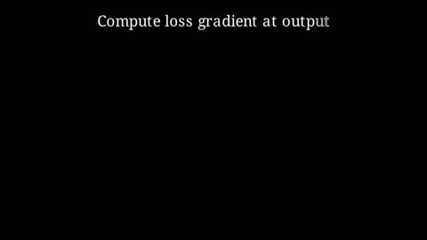
Backpropagation · deepseek-v4-flasharm A · rep 2 · 1m 45s
armA_backpropagation_deepseek-v4-flash_rep2_seq163
Every job in the ablation study that produced a video, each one beside the Manim script that generated it. Open a video to watch it, read its code, and compare the same topic and model across arms.
157 videos · 10 models · 5 topics · 184 MB · 193 minutes of animation
One generation from one prompt, rendered exactly as produced. No retrieval, no verification, no repair. 36 of the 100 jobs in this arm produced a video.

Backpropagation · deepseek-v4-flash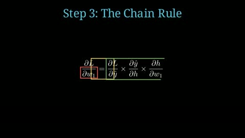
Backpropagation · gemma-4-31b-it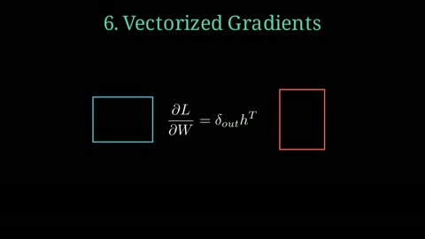
Backpropagation · hy3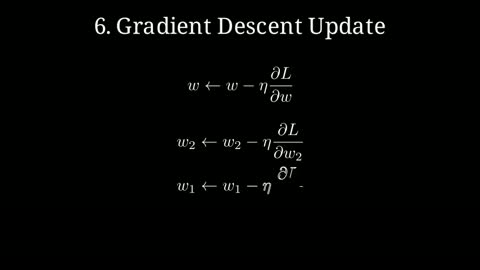
Backpropagation · hy3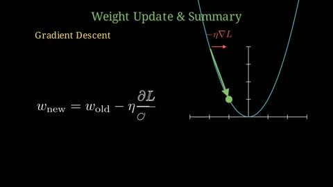
Backpropagation · kimi-k2.6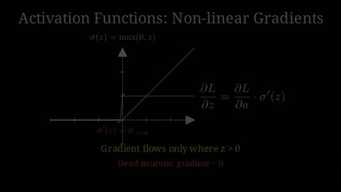
Backpropagation · nemotron-3-ultra-550b-a55b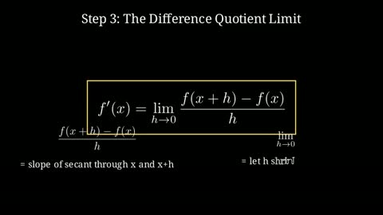
Derivative · glm-5.3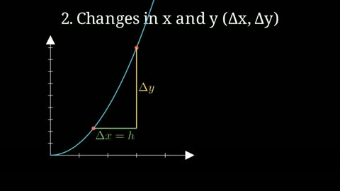
Derivative · hy3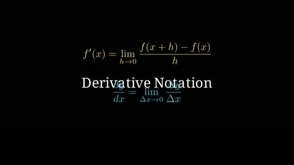
Derivative · hy3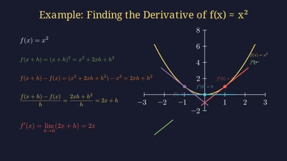
Derivative · kimi-k2.6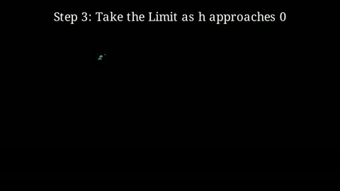
Derivative · kimi-k2.6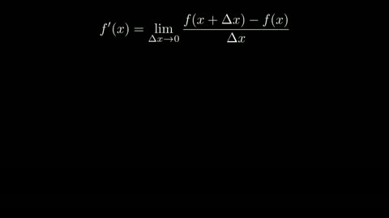
Derivative · mimo-v2.5-pro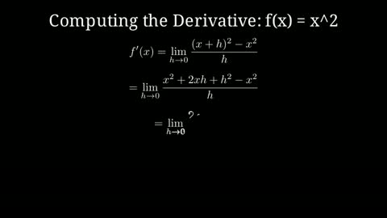
Derivative · nemotron-3-ultra-550b-a55b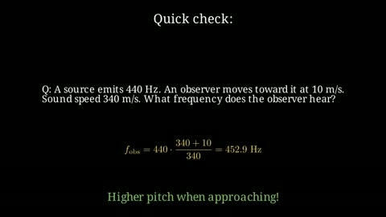
Doppler effect · deepseek-v4-flash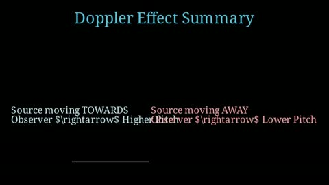
Doppler effect · gemma-4-31b-it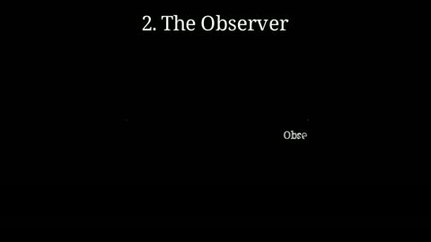
Doppler effect · gemma-4-31b-it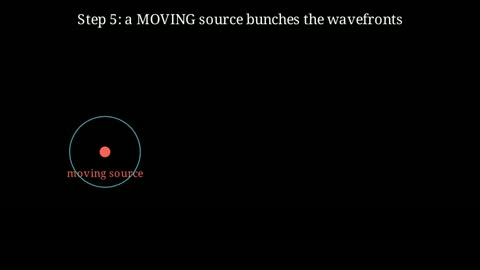
Doppler effect · glm-5.3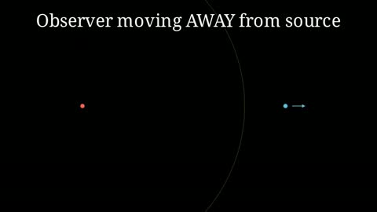
Doppler effect · hy3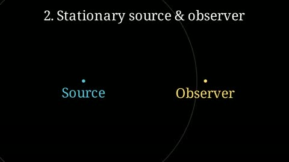
Doppler effect · hy3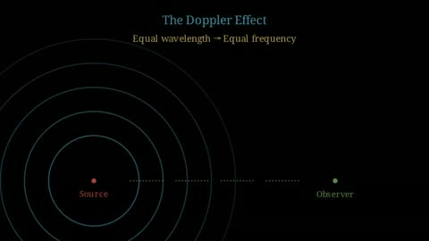
Doppler effect · kimi-k2.6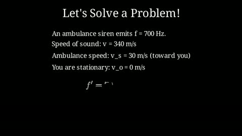
Doppler effect · mimo-v2.5-pro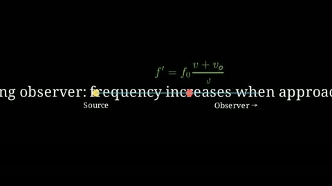
Doppler effect · muse-glimmer-30b Doppler effect · muse-glimmer-30b
Doppler effect · muse-glimmer-30b
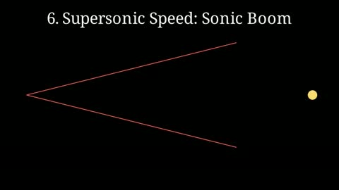
Doppler effect · nemotron-3-ultra-550b-a55b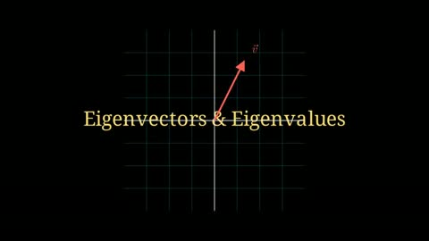
Eigenvectors · deepseek-v4-flash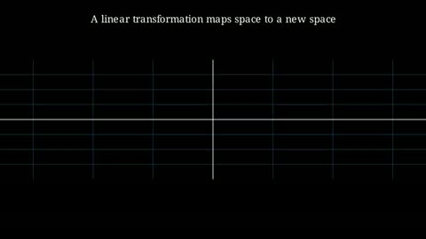
Eigenvectors · hy3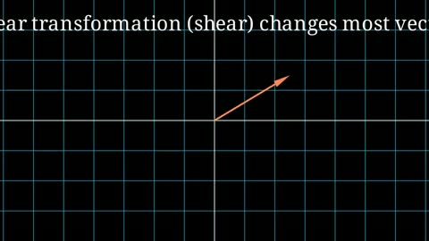
Eigenvectors · hy3 Eigenvectors · kimi-k2.6
Eigenvectors · kimi-k2.6
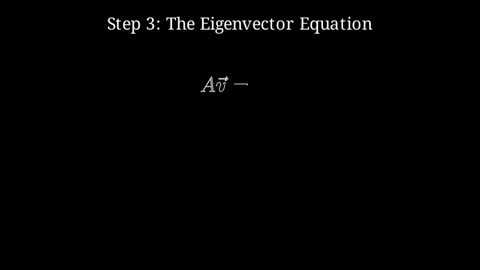
Eigenvectors · mimo-v2.5-pro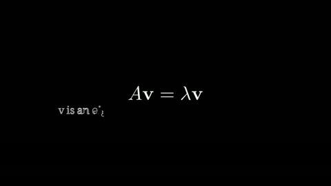
Eigenvectors · muse-glimmer-30b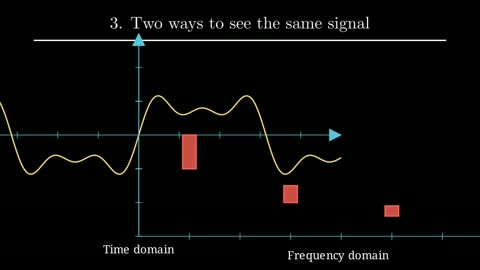
Fourier transform · deepseek-v4-flash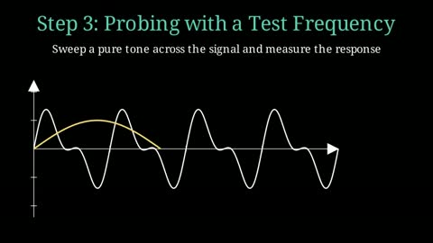
Fourier transform · glm-5.3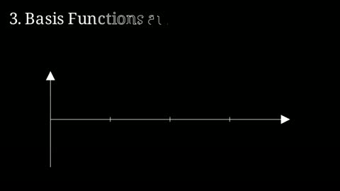
Fourier transform · hy3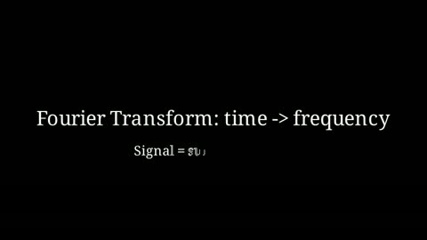
Fourier transform · muse-glimmer-30bOne generation, then AST checks, a sandboxed render, and a search-and-replace repair loop. 68 of the 100 jobs in this arm produced a video.
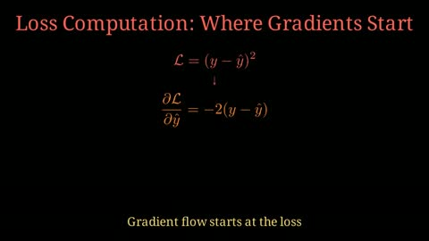
Backpropagation · deepseek-v4-flash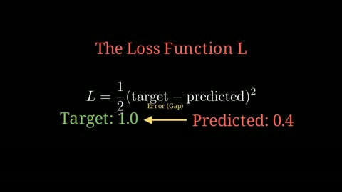
Backpropagation · gemma-4-31b-it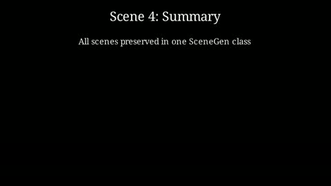
Backpropagation · glm-5.3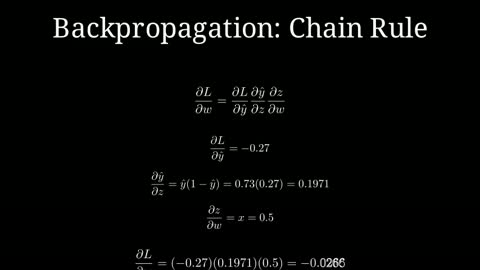
Backpropagation · gpt-oss-120b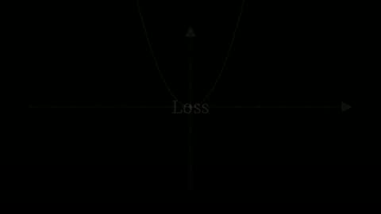
Backpropagation · hy3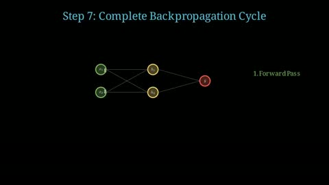
Backpropagation · kimi-k2.6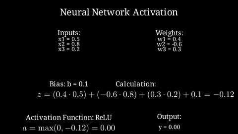
Backpropagation · mimo-v2.5-pro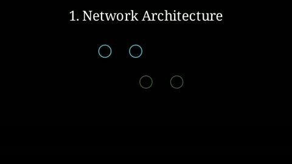
Backpropagation · muse-glimmer-30b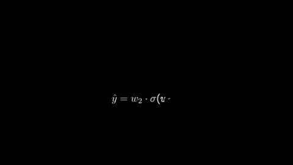
Backpropagation · muse-glimmer-30b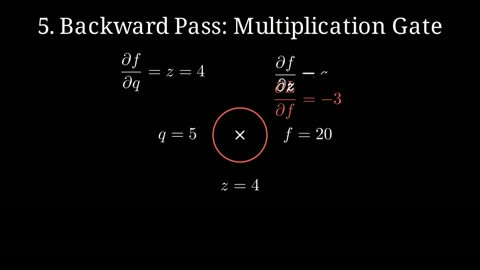
Backpropagation · nemotron-3-ultra-550b-a55b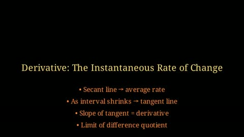
Derivative · deepseek-v4-flash Derivative · gemma-4-31b-it
Derivative · gemma-4-31b-it
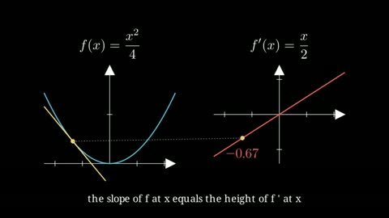
Derivative · glm-5.3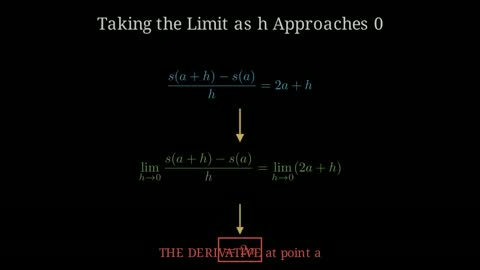
Derivative · kimi-k2.6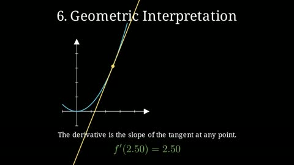
Derivative · mimo-v2.5-pro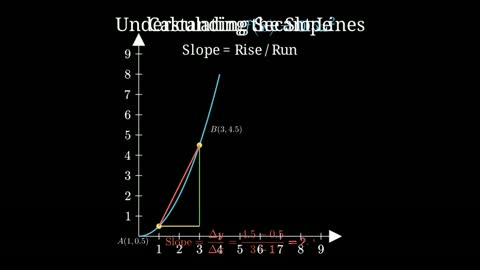
Derivative · mimo-v2.5-pro Derivative · muse-glimmer-30b
Derivative · muse-glimmer-30b
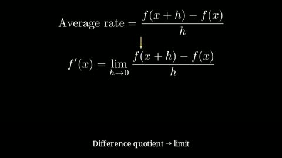
Derivative · muse-glimmer-30b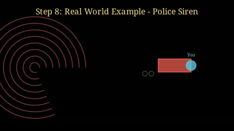
Doppler effect · deepseek-v4-flash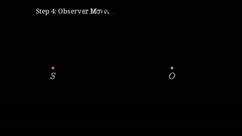
Doppler effect · deepseek-v4-flash Eigenvectors · gemma-4-31b-it
Eigenvectors · gemma-4-31b-it
 Fourier transform · qwen3.8-flash
Fourier transform · qwen3.8-flash
The full council: Analyst, Architect, and Animator, with the check and repair stages around them. 53 of the 53 jobs in this arm produced a video.
 Derivative · hy3
Derivative · hy3
Nothing matches those filters.